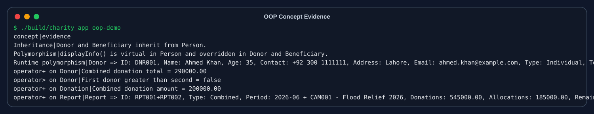
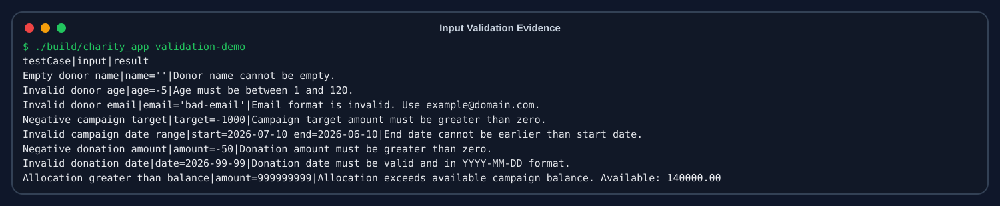
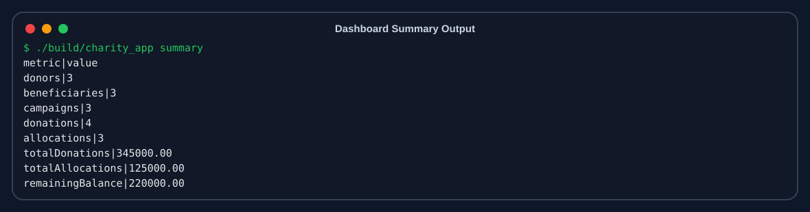
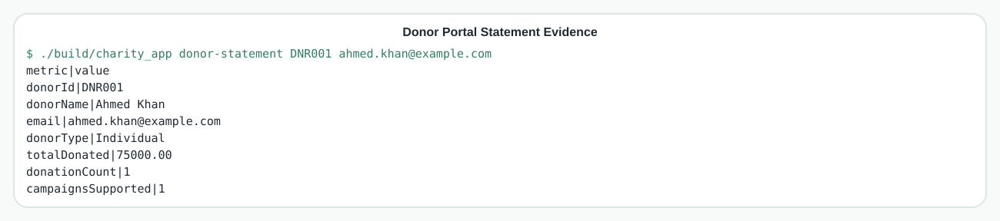
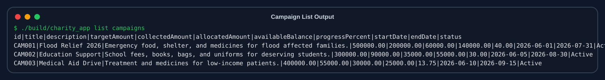

Charity & Donation Management System
OOP Project Report
Language: C++17 | GUI: Streamlit wrapper
Team: Ali Raza (2540010), Muhammad Ammar (2540004), Taha Ali (2540008)
1. Problem Definition
Small charity organizations often manage donors, campaigns, beneficiaries, donations, and expenses using paper files or simple spreadsheets. This creates weak transparency, scattered records, and difficulty proving where donations were used.
The system solves this problem by linking every donation with a donor and campaign, and every allocation with a beneficiary and campaign.
2. Solution Design
The application has two layers:
- C++ OOP Core: classes, CRUD, validation, donor verification, reports, and text-file persistence.
- Streamlit GUI: donor portal, admin login, forms, dashboard, charts, tables, and evidence pages.
The updated interface has two access modes: a read-only Donor Portal using Donor ID + email, and an Admin Area protected by simple demo login for management operations.
3. Tools and Technologies
| Area | Technology |
|---|---|
| Core Language | C++17 |
| GUI | Streamlit |
| Storage | Text files under data/ |
| Build | g++, build_core.py, Makefile |
| Documentation | Markdown, HTML, SVG UML |
4. UML Diagrams
4.1 Class Diagram

4.2 Use Case Diagram

5. Class Structure
| Class | Type | Responsibility |
|---|---|---|
Person | Base | Stores shared identity fields and virtual displayInfo(). |
Donor | Derived | Represents donors and tracks total donations. |
Beneficiary | Derived | Represents aid receivers linked to campaigns. |
Campaign | Core | Tracks target, collected, allocated, available balance, and progress. |
Donation | Core | Stores a single donation transaction. |
FundAllocation | Core | Stores aid/fund distribution to beneficiaries. |
Report | Summary | Stores monthly or campaign transparency reports. |
FileManager | Utility | Reads and writes text files. |
CharitySystem | Controller | Coordinates all operations and keeps records consistent. |
6. OOP Concepts
| Concept | Implementation |
|---|---|
| Classes and Objects | All entities are implemented as C++ classes. |
| Encapsulation | Private/protected data members with public methods. |
| Inheritance | Donor and Beneficiary inherit from Person. |
| Polymorphism | displayInfo() is virtual and overridden. |
| Constructors | Default, parameterized, and overloaded constructors are used. |
| Operator Overloading | +, >, and < are overloaded in meaningful classes. |
| File Handling | FileManager persists records to .txt files. |
OOP Evidence Output

7. Functional Modules
Donor Management
Add, update, delete, view donors, and track total donated amount.
Campaign Management
Create campaigns and monitor target, collection, allocation, balance, and progress.
Beneficiary Management
Register beneficiaries and link them to charity campaigns.
Donation Recording
Record donor contributions and update totals automatically.
Fund Allocation
Distribute funds while preventing over-allocation.
Reports
Generate monthly and campaign-level transparency reports.
8. Data Management
The system stores data in pipe-delimited text files:
| File | Purpose |
|---|---|
donors.txt | Donor records |
beneficiaries.txt | Beneficiary records |
campaigns.txt | Campaign records |
donations.txt | Donation transactions |
allocations.txt | Fund allocation records |
reports.txt | Generated reports |
9. Input Validation
Validation is implemented inside the C++ core. Invalid data is rejected even if the GUI is bypassed.
| Input | Rule |
|---|---|
| Name/title/description | Cannot be empty. |
| Age | Must be 1 to 120. |
| Contact | Must contain 7 to 15 digits with valid phone characters. |
| Must match email pattern. | |
| Amount | Must be greater than zero. |
| Date | Must be valid YYYY-MM-DD. |
| Allocation | Cannot exceed available campaign balance. |
Validation Evidence

10. Program Output Screenshots
Dashboard Summary

Donor Portal Statement

Campaign Records

11. Testing
A Python test script runs the C++ executable in an isolated temporary data folder:
python3 tests/run_core_tests.py
It verifies invalid input rejection, demo seeding, summary totals, donation validation, over-allocation prevention, report generation, and OOP evidence output.
All C++ core tests passed.
12. GUI and Deployment
Run the GUI locally with:
pip install -r requirements.txt streamlit run streamlit_app.py
The app can be deployed on Streamlit Community Cloud using GitHub. The file packages.txt includes build-essential so that the C++ core can be compiled in the cloud.
13. Conclusion
The project implements a complete C++ OOP management system with a polished GUI wrapper. It includes meaningful classes, inheritance, polymorphism, constructors, operator overloading, file handling, CRUD operations, validation, reports, UML diagrams, output evidence, and automated tests.